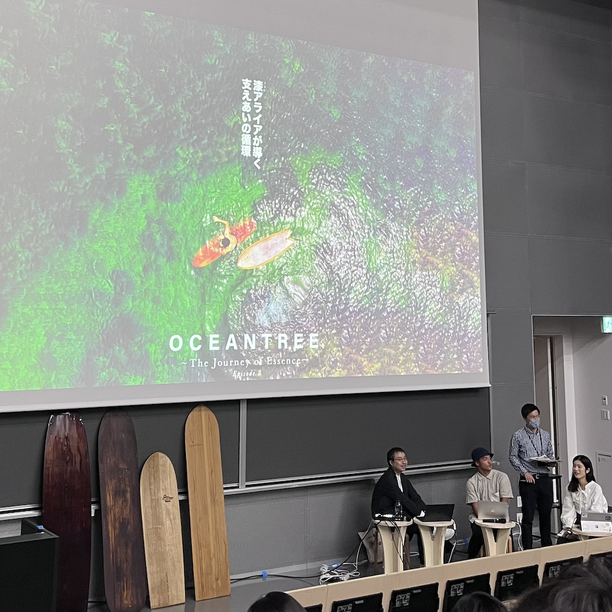

デザイン演習Ⅲ・Ⅳ
OCEAN TREE

今回石川拳太さんのお話を聞いて、一番印象に残っている言葉は「楽しむ」ということでした。
OCEAN TREEのエピソード2を見てサーフボードを一から作るのはとても大変なことであると感じましたし、私は楽しいと言う気持ちだけでは作ることはできないのではないかと考えました。
しかし、石川さんは苦しいことがあっても最後には楽しかったと思えるようになると話していて、好きなことをひたすら追い続けている姿がとても素敵だと感じました。
また、OCEAN TREEはロゴやエンディングまでオリジナルで制作してもらったと話していましたが、ここまで色々な方々が石川さんに協力しているのは石川さんの明るい人柄が影響しているのだと考えます。さらに、高校生の頃から留学をしたりさまざまな経験をしてきても常に夢を持って行動し続けている石川さんは人としてとても厚みがあるように感じました。
私も石川さんのように好きなことを追い続けることができるひたむきさや友好的な性格、夢を持ち続けることを見習って生活しようと思えました。